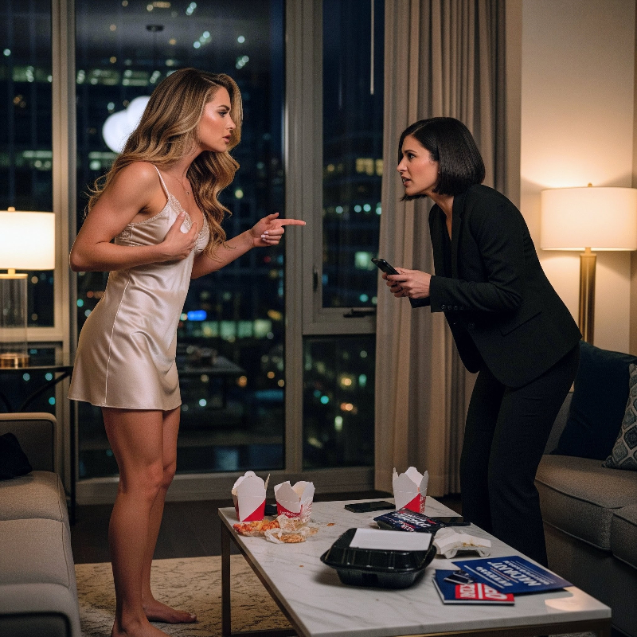

We always tend to forget that intimacy dies in increments, not all at once. Casey's withdrawal from our relationship didn't happen through dramatic fights or conscious decisions-it happened one interrupted moment at a time, each political emergency more urgent than my body pressed against hers, each crisis requiring her immediate attention while I lay abandoned mid-caress, humming with frustrated need that had nowhere to go.
The pattern had been building for weeks, but Tuesday evening three weeks out from the election crystallized everything wrong between us. Casey had actually made it home for dinner-a minor miracle that required three canceled meetings and Derek handling the evening crisis calls. I'd ordered Thai food-her favorite-and changed into the pale blush wrap dress she'd bought me back when she still noticed what I wore, when she still looked at me like something worth unwrapping rather than a campaign prop that occasionally required maintenance.
"You're home," I said as she walked through the door at seven instead of midnight, trying not to sound as desperate as I felt.
"The union negotiation got postponed." She dropped her bag and actually looked at me-really looked-for the first time in days. "You look beautiful."
We sat on the couch with takeout containers balanced on our laps, and for twenty minutes it felt almost normal. Casey told me about the advance team disaster, I shared press corps gossip about which reporters were sleeping together, and we laughed about Beau's latest attempt to seem relatable by discussing his college football days with factory workers who clearly wanted to punch him.
"God, we haven't done this in forever," Casey said, reaching over to steal a piece of my spring roll. "Just... talked. About stupid stuff."
"I know. I miss it." I set aside my container and moved closer. "I miss us."
Casey's expression softened in ways I hadn't seen in weeks. She set down her pad thai and pulled me against her, and I melted into her embrace, breathing in the familiar scent of her perfume mixed with coffee and stress that had become her permanent cologne.
"Come here," she said, her hands finding the tie of my wrap dress. When it fell open, she traced the edge of my padded bra with one finger, then slipped beneath the fabric to find real breast tissue that hadn't existed six months ago.
The hormones had given me genuine B-cups-small but undeniably present, with nipples so sensitive that her touch sent electricity straight through my nervous system. Victoria had declared the prosthetics no longer necessary last week; now I just wore heavily padded bras that took what was naturally mine and enhanced it to eye-catching proportions, creating cleavage that was authentically Yvonne even if the presentation remained theatrical.
When Casey's mouth followed where her hands had been, I arched against her with desperate gratitude, gasping at sensations that were entirely real.
"I've been so lonely," I murmured.
"I'm sorry." She turned to kiss me, and for thirty seconds, Casey was present-really present-responding with the kind of intensity that reminded me why I'd fallen for her in the first place.
Then her phone rang.
"Shit," she breathed against my mouth. "That's the union president. I have to-"
"Let it go to voicemail."
Casey's expression cycled through genuine conflict before political necessity won. "I can't. If we lose the steelworkers, we lose three counties."
She answered the call while still pressed against me, her free hand squeezing my thigh in apology. "Bill, thank God you called back. No, we can absolutely accommodate that."
I sat there listening to her negotiate endorsement details while her thumb continued its absent circles on my leg-a divided attention that somehow made the interruption worse than complete abandonment. She was physically present but mentally gone, and I was left straddling the line between intimacy and neglect, feeling her touch but knowing it was purely reflexive.
The call stretched to ten minutes, then fifteen. Casey's responses grew more complex, requiring her full attention. Her hand stilled on my hip, then withdrew entirely as she sat up, reaching for a notebook to jot down details about polling locations and volunteer coordination.
{kind=link}
By the time she hung up twenty minutes later, whatever we'd started had died of neglect.
"I'm so sorry," she said, turning back to find me retying the wrap dress with shaking hands. "Where were we?"
"Forget it."
"No, come here-"
But when she tried to restart what we'd abandoned, her touch felt dutiful rather than desperate. She was going through the motions, trying to give me what I needed while her mind clearly remained on whatever crisis the union president had outlined. I could see her mentally composing emails, calculating vote tallies, prioritizing tasks that had nothing to do with my body under her hands.
After a few minutes of mechanical intimacy that felt worse than being ignored completely, I pulled away.
"You need to handle the union thing," I said.
Relief flickered across her face before she could hide it. "Are you sure? I could-"
"Go. It's important."
She kissed my forehead-a gesture that felt more like dismissal than affection-and disappeared into our bedroom with her laptop. I heard her making calls until well past midnight, her voice a low murmur through the wall while I lay on the couch where she'd left me, my body humming with frustrated need that had nowhere to go.
In Casey's hierarchy of needs, I'd apparently fallen somewhere between returning donor calls and making a new cup of coffee. At least the coffee got finished. She'd fuck me between phone calls if schedule permitted, but she'd never choose me over the campaign. Not anymore.
Thursday morning's press briefing was a disaster I should have seen coming. Three hours of sleep and sexual frustration that felt like electrical current under my skin made coherent thought nearly impossible. I'd been running on nothing but hormone-induced chaos and whatever energy I could steal from coffee for weeks, and it was finally catching up with me.
The morning had started badly even before I reached the podium. Beau had cornered me in the hallway outside his office, ostensibly to discuss messaging strategy, but his attention kept drifting to the way my blouse fit across my chest.
"That's a flattering color on you," he'd said, his eyes lingering somewhere south of my face. When I'd tried to redirect the conversation to policy talking points, he'd stepped closer than necessary, close enough that I could smell his cologne and the whiskey he'd apparently had with his coffee.
"We should discuss the rally speech more," he'd murmured, his hand finding my elbow with possessive familiarity. "My office. After the briefing."
I'd extracted myself with professional politeness, but his behavior had left me rattled and hyperaware of every male gaze in the building. The constant navigation of his inappropriate attention was exhausting-another layer of performance required just to do my job.
By the time I reached the press room, my nerves were already frayed.
When Robert Nash asked about infrastructure priorities-a softball question I could have answered in my sleep six months ago-my mind went completely blank.
"The governor's infrastructure plan..." I started, then lost the thread entirely, staring at the press corps while my brain refused to supply the talking points I'd written myself. "The plan addresses... it's comprehensive in its approach to..."
The silence stretched uncomfortably long. Reporters exchanged glances-not cruel, but concerned. They'd watched me handle hostile questions for months with professional competence. This stumbling incompetence was new, worrying.
"Perhaps we could revisit that after I review the latest numbers," I managed finally, my voice higher than usual as panic set in.
The briefing limped through another ten minutes before I cut it short, claiming an urgent scheduling conflict that didn't exist. As the press corps filed out, I caught sympathetic looks from reporters who'd covered enough campaigns to recognize stress-induced breakdown when they saw it.
Derek found me afterward, pulling me into an empty office with the careful expression of someone approaching a wounded animal.
"Rough morning," he said, settling into the chair across from me. "Long campaign getting to everyone."
"I'm fine."
"Sure you are." He studied my face-the dark circles under concealer, the slight tremor in my hands, the way I kept tugging at my skirt like the fabric was crawling with ants. "Listen, I've got something that might help with the fatigue."
He glanced around to ensure we were alone, then pulled out a small prescription bottle. The pills inside were small and blue-the pharmaceutical salvation that kept half of Washington functioning through election season.
"Adderall," I said.
Derek nodded, sliding the bottle across the desk. "Take one in the morning, you'll feel sharp all day. Most of the communications team is on something similar by this point in the cycle. Just don't mention where you got them."
Nothing said "successful democracy" quite like the press secretary requiring pharmaceutical assistance to explain why bridges weren't collapsing. My father would be so proud. But after this morning's humiliation, after weeks of feeling like my brain was wrapped in cotton while my body screamed for relief it couldn't find, the promise of chemical clarity felt like salvation.
"One in the morning?" I asked.
"Start with one. See how you feel. Some people need more as they build tolerance." Derek's tone was matter-of-fact, like we were discussing coffee preferences rather than stimulant abuse. "The important thing is maintaining professional performance. Nobody gives a fuck what keeps you functional as long as you stay functional."
At Dr. Martinez's office that afternoon, I kept my mouth shut about the Adderall, as if admitting anything true might break the dam and let my entire fabricated transition come spilling out.
"Twenty-four weeks, levels perfect," she announced. "How are you feeling?"
Isolated. Invisible. Increasingly certain that the election timeline I'd been clinging to was the only thing standing between me and complete psychological collapse.
"Tired," I said instead. "Having trouble sleeping."
"We can adjust your dosages," she said. As if the amount of hormones I was taking was the problem, not the hormones themselves.
I squeezed my eyes shut to avoid looking at the inevitable needles, as if that would make them disappear entirely. Two quick jabs later and I imagined I could feel the progesterone spreading through my system like honey made of chaos, thick and sweet and destructive.
"It's intense," I managed, gripping the exam table as the room spun slightly.
"The first six months are always the most dramatic. Your body's still adjusting to female-typical hormone patterns. The mood swings, the physical sensitivity, the changes in sexual response-all completely normal."
Normal. Nothing about this felt normal. My nipples were so sensitive that my padded bra pressing against them felt like torture. My skin responded to every change in temperature like a full-body event. And the constant, grinding need between my legs had become background noise I couldn't escape.
"Some patients find the progesterone increases their libido significantly," Dr. Martinez continued, like she was discussing the weather. "Are you experiencing that?"
Experiencing it? I was drowning in it. But admitting that felt like confessing to something shameful.
"A little," I lied.
Friday morning I took my first pill, washing it down with coffee while staring at my reflection in the bathroom mirror. The woman looking back had sharper cheekbones than she'd possessed six months ago-the semaglutide had carved away the soft padding that once cushioned my face. My lips looked fuller, though I couldn't tell if that was the fillers or just the gloss I'd learned to apply with cosmetological precision.
The navy sheath dress I selected slid over my transformed body like satin-lined armor, the fitted fabric molding itself to curves that were now genuinely mine. Without the bulky shapewear I'd once required, the dress felt intimate against hormone-softened skin-every seam, every line of stitching registering as tactile information my rewired nervous system couldn't ignore. The way the fabric encased me from throat to mid-thigh created a constant awareness of my new proportions, the dress both revealing and containing my feminized form like a second skin that announced my transformation to anyone who looked.
The Adderall hit my system like sunrise after weeks of fog. Within an hour, thoughts that had been sluggish and scattered crystallized into laser focus. The competent political operative I'd been emerged from under months of hormonal chaos and sexual frustration, sharp and articulate and ready to demolish any reporter stupid enough to challenge me.
The press briefing went flawlessly. I fielded hostile questions about the union endorsement controversy with wit and precision, deflected opposition research about Beau's donor connections with practiced ease, delivered talking points about education funding like I was born to the podium.
"Budget projections show a three percent increase in per-pupil spending," I said, the numbers flowing effortlessly while cameras captured every word. "Combined with our infrastructure investments, we're creating sustainable pathways to economic growth that benefit both urban and rural communities."
Robert Nash tried to trip me up with a question about tax policy complexity, but I pivoted smoothly into a discussion of regulatory streamlining that made our position sound both progressive and business-friendly. The whole performance lasted thirty minutes, and I never stumbled once.
"That's more like it," Derek said afterward, studying me carefully. "Whatever you're doing, keep doing it."
The confidence high lasted through lunch, through three more interviews with local reporters, through an afternoon strategy session where I contributed policy insights that actually moved the conversation forward instead of just keeping pace.
But by evening, the stimulant had me wired and restless. Casey was at another emergency session-something about donor defections that required immediate attention-and I paced our empty apartment, skin crawling with chemical energy and nowhere to direct it. Every nerve ending felt exposed, hypersensitive to the texture of my clothes, the temperature of the air, the silence that pressed against my eardrums like accusation.
"Fuck this," I said to the empty space, though the decision should have felt more significant than it did at the time.
I grabbed my phone and clicked out a brief text to Jazmine: "need 2 clear my head"
My phone buzzed almost immediately: "girl's night at Pulse? u need to get out of that apartment"
I stared at the message for five minutes, weighing professional reputation against the desperate need to be somewhere other than this museum of abandoned intimacy. The Adderall made the decision feel logical rather than self-destructive: I needed human contact, Jazmine provided safe social interaction, and one evening of controlled recreation would help me maintain long-term performance.
"maybe just for an hour," I typed back.
The club felt different on a Friday night-more crowded, more honest about what everyone was really seeking. I'd spent twenty minutes selecting the perfect weapon from my expanded wardrobe-a red bodycon dress in stretchy jersey that molded to every artificial enhancement. The fabric clung like a second skin, the deep V-neck creating a valley of natural cleavage that drew eyes immediately downward.
The music hit like a physical force, bass lines vibrating through the floor while lights strobed across faces flushed with whatever people had taken to make the night feel possible. For the first time in weeks, I felt alive instead of merely functional.
Jazmine introduced me to her friends, and I was absorbed immediately into a group that passed compliments and drinks like communion. Someone named Adrian bought me something pink and fluorescent that tasted like artificial fruit and chemical promises. Someone else pulled me onto the dance floor where bodies pressed together in anonymous intimacy that required nothing except presence.
"You're beautiful," they shouted over the music-tall, lean, conventionally attractive in the strobing light.
I leaned into the compliment, into the hands that moved across my body with appreciation rather than obligation. For two hours, I disappeared into sensation that had nothing to do with electoral politics or campaign management. I danced with strangers who wanted nothing from me except the pleasure of proximity, who didn't need me to explain budget allocations or defend legislative priorities.
The validation was intoxicating in ways I hadn't anticipated. After weeks of feeling invisible in my own relationship, here were people who noticed me, desired me, found me worth pursuing. My engineered curves drew appreciative glances, but it was the confidence-chemical and genuine combined-that made them linger.
I came home at two AM to find Casey asleep over her laptop at the kitchen table, surrounded by budget projections and donor spreadsheets. She'd waited up-or tried to-but exhaustion had claimed her before I returned.
Looking at her there-disheveled, exhausted, completely absorbed by responsibilities that didn't include me-I felt something that might have been grief for whatever we'd once meant to each other. The woman who'd once stayed awake to undress me was now too depleted to notice I'd been gone for five hours.
But beneath the grief was something else: relief. For one evening, I'd remembered what it felt like to be wanted rather than merely useful.
The pattern locked into place with the efficiency of all effective addictions. Looking back, the escalation felt both inevitable and shocking in its speed. Friday's pharmaceutical confidence had made Monday's second pill feel logical-just combating the afternoon crash that threatened my professional competence. Within days, I was already calculating whether I'd need more chemical assistance to handle whatever crisis would destroy another evening.
Three pills daily became my baseline, each serving a specific function: morning clarity, afternoon resilience, evening energy. The efficiency was seductive, but the side effects were accumulating faster than I wanted to acknowledge. The stimulants kept me professionally sharp but turned my already chaotic libido into something that felt genuinely dangerous.
Monday night Casey actually tried to bridge the growing distance between us. We were on the couch after another delivered dinner, her hand under my dress, my body finally responding to her touch with the desperation that had been building for days. Six months of estrogen had turned every nerve ending into a live wire, and the Adderall amplified every sensation.
I was gasping against her mouth, hips moving without my permission, so close to relief I could taste it. My shifting hormones had made orgasms build differently-slower, fuller, requiring more focus-but I was almost there.
Her phone buzzed on the coffee table.
"Ignore it," I begged, my hands in her hair, trying to keep her focused on finishing what she'd started.
She glanced at the screen while still touching me, her fingers maintaining rhythm. "It's about the flood recovery efforts. Just let me-"
"Casey, please, I'm so close-"
"I have to-it's the FEMA director." But she kept touching me while she answered, her free hand maintaining contact. "Scott, yes, I understand the concern."
For thirty seconds, I thought she might actually prioritize my needs. Her hand stayed wrapped around my cock even as she listened to whatever crisis was unfolding. I could feel the orgasm building despite the distraction, my body finally approaching the release it had been denied for weeks.
Then the caller said something that made her freeze.
"Wait, they're threatening to pull the funds entirely?" Her hand withdrew as she sat up. "No, I'll handle this. Give me ten minutes to review the contracts."
"Casey-"
Her fingers withdrew, and I actually sobbed-a sound I didn't recognize from my own throat, higher and more desperate than anything I'd ever produced.
"I'm so sorry." She was already reaching for her laptop, the moment abandoned. "This could cost us billions."
She disappeared into our bedroom with the computer, leaving me sprawled on the couch, dress pushed up around my waist, body screaming for completion that wouldn't come. The frustration was physical pain, made worse by having been so close before politics intervened again.
I lay there for ten minutes, listening to her coordinate crisis management through the bedroom wall, my body humming with unmet need. Finally, I reached between my legs, trying to finish what she'd started, but my own touch felt wrong, inadequate. The hormones had changed everything about how my body responded-what used to be straightforward now required specific conditions, another person's hands, validation that I was still desirable.
The Adderall made the sexual frustration feel like insects crawling under my skin. I took a shower, hoping hot water might provide some relief, but that only made things worse. Every sensation was amplified, overwhelming, and I emerged feeling more desperate than before.
The stress of the campaign was getting to everyone, and Rivera looked as exhausted as I felt when he arrived at our weekly message coordination meeting. His presence had become a physical thing I couldn't ignore. He sat close enough that I could smell his cologne-that woody scent that my rewired brain had started associating with safety and desire in equal measure. When he leaned over to show me something in his notes, his breath ghosted across my neck, and I had to grip the table edge to keep from visibly shuddering.
"You okay?" he asked, sensing that something was off.
"Fine," I lied.
"Been a long day already."
I nodded. It didn't help that I'd been out last night until three. I suddenly remembered I'd left my car at the club and didn't have a way home. "Shit," I said under my breath.
Rivera looked at me with confusion, and I made up a lie less embarrassing than the truth, something about an Uber mix-up that had left me stranded downtown.
"I can give you a ride," Rivera offered, setting aside the policy briefings. "Where did you leave it?"
"Riverside," I said without thinking. "There's a trans club there-"
His response was immediate, unguarded. "Yeah, Pulse. Right off Industrial Boulev-"
Then he caught himself, face flushing as he realized what he'd just revealed. Normal people didn't know the specific location of Riverside's primary LGBTQ+ nightclub unless they'd been there. Unless they'd researched it for reasons they couldn't admit publicly.
We stared at each other for a moment, both understanding what had just happened. Rivera's carefully constructed political persona-the family-values moderate with broad demographic appeal-had just cracked to reveal something more complex underneath.
"I mean-" he started, then stopped, seeming to weigh whether explanation would make things worse.
"You've been there," I said quietly.
"No, I just... I drive through that area sometimes for-" Another stop. We both knew he was digging himself deeper.
"Michael."
Something in my voice made him abandon the pretense. His shoulders sagged slightly, and when he looked at me again, it was with the vulnerability of someone whose carefully constructed facade had just cracked.
"I've driven by," he admitted. "More than once. I've never gone in, but I've... thought about it."
The confession hung between us, dangerous and electric. This wasn't casual ally curiosity or political research. This was personal interest he'd been carrying in secret, and the weight of that secret had just shifted onto me.
"There's something about you that I..." He caught himself again, shaking his head. "I should drive you to your car."
The ride was twenty minutes of loaded silence, both of us hyper-aware of what hadn't been said. When he pulled up outside Pulse, the club looked different in daylight-seedier, smaller, just another building housing secrets that seemed less important in the harsh sun.
"Yvonne," he said as I reached for the door handle.
I turned back, and saw something in his expression that made my chest tight with possibilities I couldn't afford to consider. Want, maybe. Or recognition. The look of someone who'd been carrying desire they couldn't acknowledge, finally seeing a potential path toward honesty.
"Thank you," I said instead of whatever we both wanted me to say. "For the ride."
But as I walked to my car, I could feel him watching, and the knowledge that his interest wasn't purely professional sent heat through me that had nothing to do with the unseasonably warm weather.
That evening brought another attempt at connection with Casey, this time over dinner neither of us had energy to cook properly. I wanted to tell her what Rivera had revealed to me, but couldn't bring myself to share it. The guilt of him wanting me because of something so personal, yet so false, caused more guilt than I had the words to express. So instead we sat across from each other at our small table, sharing takeout while she reviewed poll numbers on her tablet.
"Good news from the western counties," she said without looking up. "We're holding steady in areas that should be competitive."
"That's great." I reached across the table to touch her hand. "You've done incredible work with the ground game."
Casey smiled-a real smile. "We make a good team."
"The best team."
For a moment, the connection felt real again. Casey set aside her tablet, laced her fingers through mine, looked at me with something approaching the hunger that had once characterized our relationship.
We had moved to the bed and Casey's hand was under my dress, her fingers finally-finally-wrapped around my cock when Beau called. The familiar events played out once again: me begging her to not answer, her doing it anyway, the door closing as she left for the office to handle yet another crisis, promising me we'd continue things later as my body shook with frustrated need.
Later never came. She never returned from the office that night, leaving me lying in our bed alone with my thighs pressed together, trying to create pressure that might offer relief. The progesterone had turned my libido into a living thing with its own agenda, demanding attention Casey was too absent to provide.
The October heat wave wasn't helping. Even with the air conditioning running, my skin felt oversensitive, every brush of fabric against flesh registering as either irritation or arousal. The nightgown Casey had bought me months ago stuck to the hormone-created B cups on my chest, with nipples that stayed constantly erect and tender, sending signals to a brain increasingly unable to process them rationally.
My phone showed 3:17 AM. No messages from Casey since her apologetic text at midnight: "Still at headquarters. Union thing is imploding. Don't wait up."
I hadn't been waiting up. I'd been lying here in sexual frustration so intense it felt like grief, touching myself to no relief because my body had forgotten how to respond to my own hands. The hormones had changed the whole geography of arousal-what used to be straightforward had become complex, requiring time and attention and another person's touch to achieve anything resembling satisfaction.
The apartment's emptiness pressed against me. I grabbed my phone, scrolling through Instagram. There was my face in a Getty Images photo from yesterday's rally, smiling beside Beau in a teal dress that emphasized every curve. The comments below were the usual mix-supporters praising my bravery, trolls discussing what they'd do to my body, political junkies analyzing whether my transformation helped or hurt Beau's numbers with suburban women.
Below that, a post from Rivera's account-a candid shot from yesterday's factory tour, him laughing with workers, sleeves rolled up, looking genuinely engaged rather than performing for cameras. The caption read "Best part of this job: real conversations with real people." Without thinking, I double-tapped, then immediately panicked and unliked it. But the damage was done.
Michael Rivera, 3:23 AM: "caught you scrolling. can't sleep either?"
My heart hammered as I stared at the message.
"sorry, didn't mean to wake you with notifications"
"already awake. today was... complicated"
I knew he meant our moment in the car, his slip about Pulse, the confession that hung between us.
"I understand what you meant earlier. u don't need to explain"
"thank you. that means more than you know."
"try to get some sleep"
"You too. Sweet dreams, Yvonne."
The way he used my name felt intimate, like he was saying it to my face in the darkness. I set the phone aside but picked it up again immediately, rereading the brief exchange. Seven messages total, but they contained more genuine connection than I'd had with Casey in weeks.
Two days later, I found myself at Pulse again, this time seeking specific relief rather than general escape. The Adderall had left me wired but depleted, craving stimulation.
Jazmine was there with her usual crowd, including someone new-a woman with candy-colored hair and kind eyes who radiated the particular confidence of someone used to solving other people's problems.
"This is Skye," Jazmine said, drawing me into their circle. "She's from my support group. Very knowledgeable about... mood management."
Skye studied me, taking in the slight tremor in my hands, the way I kept scanning the room.
"You look tense," she observed. "The Adderall's got you wired but you can't turn it off, right? Racing thoughts, can't sleep?"
The accuracy was unnerving. "Yes."
"I have something that'll smooth those edges without knocking you out." She produced a small white pill. "Think of it as an off switch for your mind."
Building chemical dependencies to manage problems that required actual solutions was a mistake. I knew that. Instead, I placed the pill under my tongue, tasting bitterness that promised relief from the constant noise in my head.
Within an hour, the world had softened around the edges. The racing thoughts quieted to a manageable hum. The desperate sexual need remained but felt less urgent, less like something that might drive me genuinely insane. For the first time in days, I could exist without feeling like my skin might crawl off my body.
The rest of the night blurred into music and movement, bodies pressing close in ways that felt safe rather than desperate. I danced until the chemicals wore thin.
I stumbled home at dawn, navigating cobblestones in stilettos while coming down off Skye's pills. Certainly not something they'd taught me to do at Georgetown. Casey was asleep on the couch again, surrounded by budget projections and donor spreadsheets that had consumed whatever capacity she'd once had for human connection.
With only a week left before the election, I was managing my existence through pharmaceuticals with the precision of a Swiss timepiece. Three Adderall daily for function, Skye's pills to let go, hormones that kept my body cycling through changes I couldn't control, all balanced against a schedule that required performance regardless of how I felt. I was at Pulse every night, desperate for attention, for desire, for release. Surviving on two hours of sleep, coffee, and Adderall made my entire existence feel thin, like a balloon stretched to popping.
The final weekend, Casey came home long enough to shower and change clothes, moving through our apartment like a ghost who'd forgotten she used to live there.
I was on the couch in the champagne silk nightgown Casey had bought me months ago-one of the few pieces of clothing that still felt comfortable against skin that had become hypersensitive to everything-pretending to review talking points while really just waiting for her to notice I existed.
She emerged from the bedroom in fresh clothes, already reaching for her phone to check messages that had accumulated during her ten-minute absence.
"How long will you be gone this time?" I asked.
"I don't know. The ground game data is all fucked up, and we need to reallocate resources in six counties before Monday." She looked exhausted, running on adrenaline and maybe some stimulants of her own. "I'm sorry. After Tuesday-"
"After Tuesday what? We go back to normal?" I laughed, and it came out bitter, shaped by pharmaceuticals and frustration in equal measure. "What exactly is normal now, Casey? When did you last sleep here? When did we last have a conversation about something besides campaign logistics?"
She stopped packing her briefcase, reaching for my hand with the careful attention of someone defusing a bomb.
"Baby, I know this is hard. But we're so close to the finish line. Three more days, and then-"
"Then what? You think everything just goes back to how it was in January? You think I can just put on some pants and be Evan again?" I gestured to my body, cupping the curves that were now undeniably real, to the face that hormones had softened into something unrecognizable. "Look at me, Casey. Really look."
{kind=link}

She did, and something flickered across her expression-surprise, maybe, or resignation.
"You're beautiful," she said finally. She wasn't wrong. But it wasn't what I needed to hear in that moment.
"That's not what I'm asking." I pulled my hand away, feeling the silk nightgown shift against skin that registered every texture like a caress. "I'm asking if you've noticed that your boyfriend now has tits and takes a woman's name in bed. But sure, let's pretend Tuesday solves everything."
Casey was quiet for a long moment. When she finally spoke, her voice carried the careful neutrality of someone delivering bad news.
"We'll figure it out. After Tuesday, when things calm down, we'll figure out what comes next."
"What if I don't want to figure it out?" The question surprised me as much as it surprised her. "What if this is who I am now?"
She stared at me like I'd just confessed to a crime.
"The Addy is affecting your judgment," she said carefully. "You're not thinking clearly about the long-term implications-"
"That's the only thing keeping me functional!" I yelled. "You want to know what's affecting my judgment? It's you. It's coming home to empty apartments and interrupted conversations and feeling like I'm in a relationship with a campaign instead of a person."
"That's not fair-"
"Isn't it?" I walked to the window, looking out at the city where tomorrow my plumped, glossed lips would recite talking points while my personal life disintegrated in real time. "When did you last want me, Casey? Not need me for campaign purposes, not appreciate my political utility-when did you last want me?"
The silence stretched long enough to constitute an answer.
"After Tuesday," she said finally, gathering her things with movements that suggested escape rather than departure. "We'll talk about all of this after Tuesday."
She left me standing there in silk and fury, understanding that whatever we'd built together had been sacrificed to political necessity one emergency at a time.
That night I wore my most scandalous dress to Pulse and took pills from three different sources with the intention of disappearing completely. The combination hit different than anything I'd tried before-everything too sharp, too bright, too much. Skye's usual offering mixed with whatever Adrian had given me and the residual Adderall still coursing through my system, creating a chemical cocktail that made reality feel pliable.
When someone started kissing me on the dance floor-I didn't even see their face clearly in the strobing light-I kissed back with desperation that had nothing to do with them and everything to do with needing to feel wanted by someone, anyone, who wasn't too exhausted to follow through.
Their hands were under my dress before I remembered where we were, and instead of stopping them, I arched into the touch. The hormones had made my skin a network of nerve endings all firing at once, and the pressure of bodies against mine felt like the closest thing to relief I'd found in weeks.
"You're so fucking hot," they said against my ear, their hand wrapping around my shaft through my underwear right there on the dance floor.
I should have stopped them. Should have cared that we were in public, that anyone could see, that this was exactly the kind of behavior that destroyed political careers. Instead I pressed against their grip, chasing the release Casey could never quite provide.
But even here, even with a stranger's hand on my cock and chemicals making everything feel possible, I couldn't come. My body had learned to associate touch with interruption, pleasure with abandonment. The hormones had rewired arousal into something that required emotional safety I couldn't manufacture through pharmacology.
When they suggested we find somewhere more private, I followed them toward the back rooms designed for exactly what we were contemplating. The area was darker, more intimate, designed for encounters that required privacy. Against the wall, their mouth on mine, their hands mapping territory Casey had abandoned, I felt more present than I had in weeks. This was real-the desire, the touch, the validation that I still existed as something more than a political problem.
"You're incredible," they whispered against my throat.
I was so close to letting them do whatever they wanted, to disappearing completely into sensation that demanded nothing except physical response. But Jazmine appeared, pulling me away with apologies to the stranger.
"We're leaving," she said.
"I'm fine-"
"You're not fine. You're barely standing."
She was right. Whatever Skye had given me mixed with the stimulants and hormones, creating a chemical chaos that made walking feel like swimming through air. Jazmine half-carried me to her car, drove me home, and helped me into the empty apartment before confronting me.
"You took Molly? Jesus, Yvonne, what were you thinking?" Jazmine's voice carried disappointment rather than anger. "You're going to hurt yourself."
"I'm already hurt," I said, the chemicals making honesty easier. "This is just managing the pain."
She stayed until she was sure I was okay, but even after Jazmine left my body was still humming with unmet need. I touched myself through the dress, trying to recreate the pressure of my anonymous partner's hands, but it wasn't enough. Nothing was ever enough anymore. The progesterone had turned my body into an instrument that required another person to play, and the one person who was supposed to be there had disappeared into campaign crises and eighteen-hour days.
Dawn was leaking through the windows of our apartment. Casey's side of the bed was empty, her laptop gone from the kitchen table. A note in her handwriting said she'd gone to headquarters early to handle last-minute crisis management.
I peeled off the dress and collapsed into bed, my body thrumming with chemical aftereffects and emotional exhaustion. I'd get an hour of sleep before rising to become Yvonne once again, a costume that no longer felt like something I would ever take off. Tuesday would bring Election Day, the finish line we'd been racing toward for months. But lying there alone in silk sheets that smelled faintly of Casey's abandoned perfume, I finally understood that crossing that finish line wouldn't end anything.
There was no exit strategy.
There was only the next injection, the next crisis, the next dance with strangers who wanted pretty things they could touch in the dark.
Casey's withdrawal from our relationship didn't happen all at once. It was death by a thousand interruptions, each one justified by campaign necessity but cumulatively fatal to whatever intimacy we'd built over the months of my transformation. The woman who'd once helped me navigate my first steps in heels now treated me like sophisticated prop that occasionally required maintenance but never her full attention.
The election would come and go, but this-this body, this need, this impossible existence between what I'd been and what I'd become-this was permanent. And maybe, the hormones whispered in my blood as unconsciousness finally claimed me, that wasn't entirely terrible.
Even if the person who was supposed to want me most had forgotten I existed.